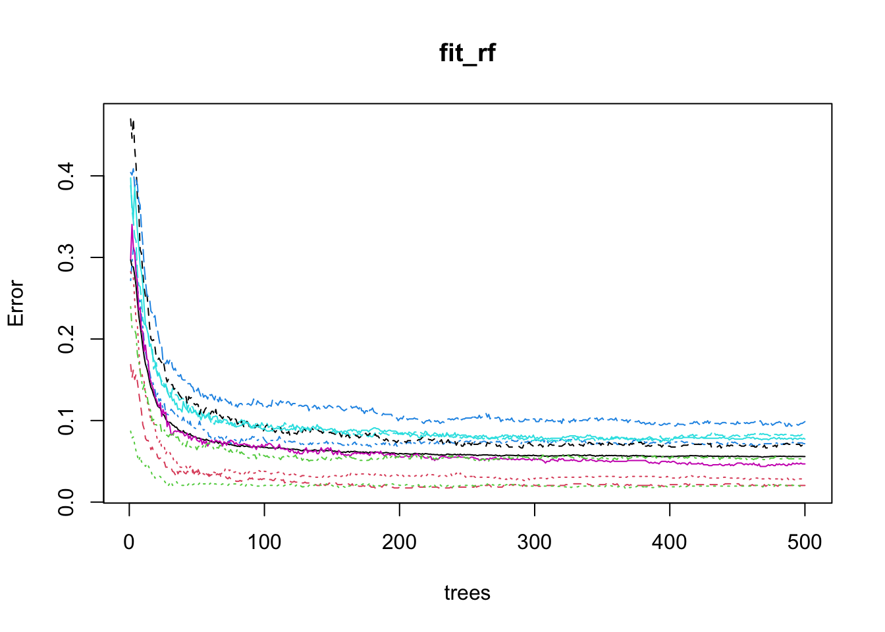
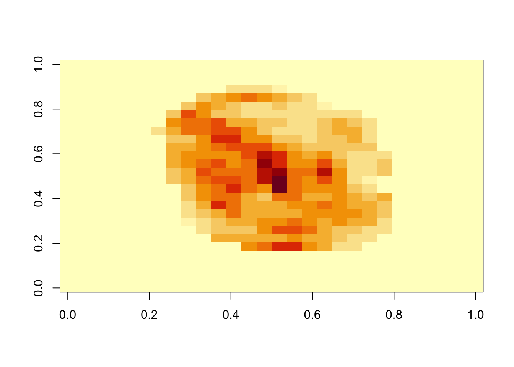

library(dslabs)
mnist <- read_mnist() ML In Practice
Keywords
Machine Learning
Machine learning in practice
Now that we have learned several methods and explored them with simple examples, we will try them out on a real example: the MNIST digits.
We can load this data using the following dslabs package:
Loading required package: ggplot2Loading required package: latticerandomForest 4.7-1.2Type rfNews() to see new features/changes/bug fixes.
Attaching package: 'randomForest'The following object is masked from 'package:ggplot2':
marginMachine learning in practice
- We will sample 10,000 random rows from the training set and 1,000 random rows from the test set:
set.seed(1990)
index <- sample(nrow(mnist$train$images), 10000)
x <- mnist$train$images[index,]
y <- factor(mnist$train$labels[index])
index <- sample(nrow(mnist$test$images), 1000)
x_test <- mnist$test$images[index,]
y_test <- factor(mnist$test$labels[index]) - Note we make the outcomes factors.
Machine learning in practice
- Assing names to columns for caret.
colnames(x) <- 1:ncol(mnist$train$images)
colnames(x_test) <- colnames(x) Parallelization
During cross-validation or bootstrapping, the process of fitting models to different samples or using varying parameters can be performed independently.
Imagine you are fitting 100 models; if you had access to 100 computers, you could theoretically speed up the process by a factor of 100 by fitting each model on a separate computer and then aggregating the results.
Most modern computers, are equipped with multiple processors that allow for such parallel execution.
Parallelization
The caret package is set up to run in parallel but you have to let R know that you are want to parallelize your work.
To do this we can use the doParallel package:
library(doParallel) Loading required package: foreachLoading required package: iteratorsLoading required package: parallelnc <- detectCores() - 1 # it is convention to leave 1 core for OS
cl <- makeCluster(nc)
registerDoParallel(cl) Parallelization
- If you do use parallelization, make sure to let R know you are done with the following lines of code:
stopCluster(cl)
stopImplicitCluster()
Warning
When parallelizing tasks across multiple processors, it’s important to consider the risk of running out of memory.
Each processor might require a copy of the data or substantial portions of it, which can multiply overall memory demands.
This is especially challenging if the data or models are large.
k-nearest neighbors
We therefore us cross-validation to estimate our MSE.
The first step is to optimize for \(k\).
train_knn <- train(x, y, method = "knn",
preProcess = "nzv",
trControl = trainControl("cv",
number = 20,
p = 0.95),
tuneGrid = data.frame(k = seq(1, 7, 2))) k-nearest neighbors
- Once we optimize our algorithm, the
predictfunction defaults to using the best performing algorithm fit with the entire training data:
y_hat_knn <- predict(train_knn, x_test, type = "raw") - We achieve relatively high accuracy:
confusionMatrix(y_hat_knn, factor(y_test))$overall["Accuracy"] Accuracy
0.952 Dimension reduction with PCA
- An alternative to removing low variance columns directly is to use dimension reduction on the feature matrix before applying the algorithms.
pca <- prcomp(x) - We can actually explain, say, 75% of the variability in the predictors with a small number of dimensions:
p <- which(cumsum(pca$sdev^2)/sum(pca$sdev^2) >= 0.75)[1] Dimension reduction with PCA
- We can then re-run our algorithm on these 33 features:
fit_knn_pca <- knn3(pca$x[,1:p], y, k = train_knn$bestTune) Dimension reduction with PCA
When predicting, it is important that we not use the test set when finding the PCs nor any summary of the data, as this could result in overtraining.
We therefrom compute the averages needed for centering and the rotation on the training set:
newdata <- sweep(x_test, 2, colMeans(x)) %*% pca$rotation[,1:p]
y_hat_knn_pca <- predict(fit_knn_pca, newdata, type = "class") Dimension reduction with PCA
- We obtain similar accuracy, while using only 33 dimensions:
confusionMatrix(y_hat_knn_pca, factor(y_test))$overall["Accuracy"] Accuracy
0.965 Dimension reduction with PCA
In this example, we used the \(k\) optimized for the raw data, not the principal components.
Note that to obtain an unbiased MSE estimate we have to recompute the PCA for each cross-validation sample and apply to the validation set.
Dimension reduction with PCA
- Because the
trainfunction includes PCA as one of the available preprocessing operations we can achieve this with this modification of the code above:
train_knn_pca <- train(x, y, method = "knn",
preProcess = c("nzv", "pca"),
trControl = trainControl("cv",
number = 20,
p = 0.95,
preProcOptions =
list(pcaComp = p)),
tuneGrid = data.frame(k = seq(1, 7, 2)))
y_hat_knn_pca <- predict(train_knn_pca, x_test, type = "raw")
confusionMatrix(y_hat_knn_pca, factor(y_test))$overall["Accuracy"] Accuracy
0.969 Dimension reduction with PCA
A limitation of this approach is that we don’t get to optimize the number of PCs used in the analysis.
To do this we need to write our own method.
Random Forest
- With the random forest algorithm several parameters can be optimized, but the main one is
mtry, the number of predictors that are randomly selected for each tree.
Random Forest
- This is also the only tuning parameter that the caret function
trainpermits when using the default implementation from the randomForest package.
library(randomForest)
train_rf <- train(x, y, method = "rf",
preProcess = "nzv",
tuneGrid = data.frame(mtry = seq(5, 15)))
y_hat_rf <- predict(train_rf, x_test, type = "raw") Random Forest
- Now that we have optimized our algorithm, we are ready to fit our final model:
y_hat_rf <- predict(train_rf, x_test, type = "raw") - As with kNN, we also achieve high accuracy:
confusionMatrix(y_hat_rf, y_test)$overall["Accuracy"] Accuracy
0.952 - By optimizing some of the other algorithm parameters, we can achieve even higher accuracy.
Testing
The default method for estimating accuracy used by the
trainfunction is to test prediction on 25 bootstrap samples.This can result in long compute times.
We can use the
system.timefunction to estimate how long it takes to run the algorithm once:
nzv <- nearZeroVar(x)
system.time({fit_rf <- randomForest(x[, -nzv], y, mtry = 9)}) user system elapsed
61.121 0.412 61.549 Testing
One way to reduce run time is to use k-fold cross validation with a smaller number of test sets.
A popular choice is leaving out 5 test sets with 20% of the data.
To use this we set the
trControlargument in train to:
trControl = trainControl(method = "cv", number = 5, p = .8)Testing
For random forest, we can also speed up the training step by running less trees per fit.
After running the algorithm once, we can use the plot function to see how the error rate changes as the number of trees grows.
Testing
- We can see that error rate stabilizes after200 trees:
plot(fit_rf) 
Testing
We can use this finding to speed up the cross validation procedure.
Specifically, because the default is 500, by adding the argument
ntree = 200to the call totrainThe procedure will finish 2.5 times faster.
Variable importance
- The following function computes the importance of each feature:
imp <- importance(fit_rf) Variable importance
- We can see which features are being used most by plotting an image:
mat <- rep(0, ncol(x))
mat[-nzv] <- imp
image(matrix(mat, 28, 28)) 
Diagnostics

Ensembles
The idea of an ensemble is similar to the idea of combining data from different pollsters to obtain a better estimate of the true support for each candidate.
In machine learning, one can usually greatly improve the final results by combining the results of different algorithms.
Here is a simple example where we compute new class probabilities by taking the average of random forest and kNN.
Ensembles
- We can see that the accuracy improves:
p_rf <- predict(fit_rf, x_test[,-nzv], type = "prob")
p_rf <- p_rf / rowSums(p_rf)
p_knn_pca <- predict(train_knn_pca, x_test, type = "prob")
p <- (p_rf + p_knn_pca)/2
y_pred <- factor(apply(p, 1, which.max) - 1)
confusionMatrix(y_pred, y_test)$overall["Accuracy"] Accuracy
0.97 Ensembles
We have just built an ensemble with just two algorithms.
By combing more similarly performing, but uncorrelated, algorithms we can improve accuracy further.